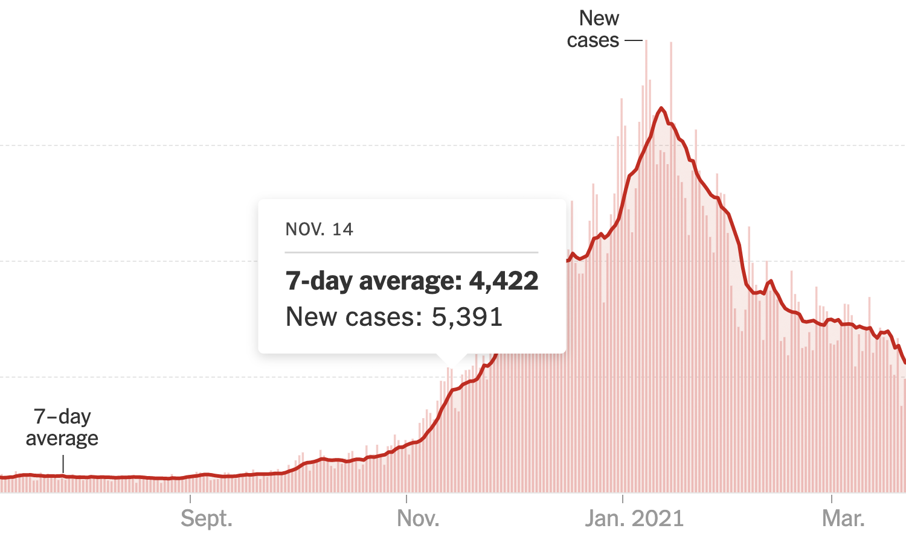

The Coronovirus
Outbreak
India has reported 1,997 new Covid cases and 9 deaths in 24 hours.
The active caseload has declined to 30k. Current recovery rate is 98.75%.
FRI, OCT 7, 2022 | UPDATED 09.58AM IST
COVID TRACKER
- 2,797 fresh cases in India
- India's active caseload has fallen below 30k mark, and currently stands at 29,251
- 'Covid-19 mRNA vaccines increase risk of cardiac-related death'
- Mumbai on Saturday recorded 130 new cases of Covid-19 and one fatality that raised the tally of infections to 11,51,170 and toll to 19,735, an official from the Brihanmumbai Municipal Corporation said.
- The Covid-19 tally in Madhya Pradesh reached 10,54,425 on Saturday after the detection of 15 cases at a positivity rate of 0.4 per cent, a health official said.
- Gujarat on Saturday reported 87 Covid-19 cases, which took the state's tally to 12,75,410, a health department official said.
- Chhattisgarh on Saturday reported 80 Covid-19 cases at a positivity rate of 1.85 per cent, taking the state's tally to 11,76,673, while the death toll remain unchanged at 14,137, an official said.
- West Bengal logged 243 fresh Covid-19 positive cases on Saturday, pushing the tally to 21,15,688, a health department bulletin said.
